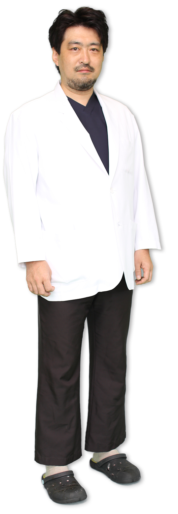
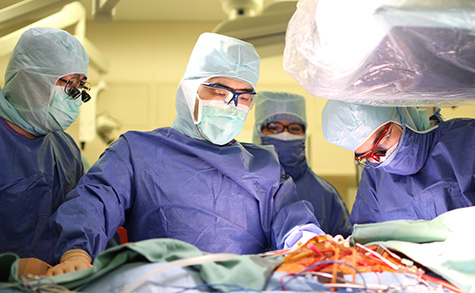
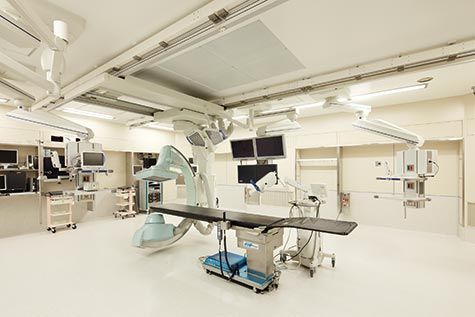

もどる
もどる

白井 伸一
1募集対象の先生
- （1）自施設でStructural Heart Diseaseの立ち上げにかかわりたい方
- （2）Heart Teamの研修を行いたい方
- （3）Structural Imaging（TEE、CT）を極めたい方
- （4）冠動脈、末梢血管とともにStructureも行いたい方
- （5）Structure関連で国際学会発表、論文を書いてみたい方

2教育体制
各分野のスペシャリストが全面バックアップ
現在、冠動脈治療、ならびに末梢血管治療に加えて、Structural Heart Disease（SHD）に対するインターベンションが日本でも広く行われつつあります。SHDの対象疾患は、大動脈弁狭窄症、僧帽弁狭窄症、心房中隔欠損症、動脈管開存症、肺動脈弁狭窄症など、今までは外科治療でしか治療しえなかった疾患に対してカテーテル治療を行うことを指します。そして、これらの治療には、種々のModalityを用いて術前の評価を行うこと、さらに症例の選択を行うにあたり心臓血管外科との様々なディスカッションが必要です。PCIやEVTとはやや異なる側面を持つSHD治療の広い側面からの習得、ならびに包括的なHeart Team Interventionの習得を目指します。Intervention courseとImaging courseどちらを希望するかを最初にお聞きします。いずれのCourseでも（１）Structural Heart Diseaseだけでなく一般的なカテーテル検査（２）TEE、CT読影のImagingの基本（３）一般的な管理は全ての基本であるため、カテーテル室とエコー室には参加していただくこととなります。
| 2011 | 2012 | 2013 | 2014 | 2015 | 2016 | 2017 | 計 | |
|---|---|---|---|---|---|---|---|---|
| TAVI | 0 | 6 | 10 | 60 | 88 | 112 | 181 | 457 |
| BAV | 26 | 45 | 33 | 48 | 82 | 59 | 35 | 328 |
| ASO | 12 | 15 | 15 | 14 | 11 | 17 | 16 | 100 |
| PTSMA | 10 | 6 | 3 | 3 | 4 | 5 | 6 | 37 |
| PTMC | 7 | 3 | 3 | 8 | 2 | 5 | 0 | 28 |
| ADO | 0 | 1 | 1 | 0 | 0 | 2 | 4 | 8 |
| LAAO | 0 | 0 | 0 | 0 | 0 | 0 | 4 | 4 |
| PTPV | 1 | 0 | 0 | 0 | 0 | 0 | 0 | 1 |
| 計 | 56 | 76 | 65 | 133 | 187 | 200 | 246 | 963 |
| 月曜日 | 火曜日 | 水曜日 | 木曜日 | 金曜日 | |
|---|---|---|---|---|---|
| 7:30-8:10 | TAVIカンファレンス | Morning Lecture | Paper Review | 循環器心臓血管外科カンファレンス | |
| 8:10-9:00 | 循環器カンファレンス | 循環器カンファレンス | 循環器カンファレンス | 循環器カンファレンス | 循環器カンファレンス |
| 8:10-13:00 | カテーテル検査 | ASD | カテーテル検査 | TAVI | カテーテル検査 |
| 13:00-17:00 | カテーテル検査、TEE | ASD | カテーテル検査、TEE | TAVI | カテーテル検査、TEE |
| 17:00-18:00 | 循環器カンファレンス | 循環器カンファレンス | 循環器カンファレンス | 循環器カンファレンス | 循環器カンファレンス |
| 18:00-19:00 | SHDカンファレンス | TAV術前カンファレンス |
上記のTime-tableは一例ですがASDならびにTAVIは曜日が固定されていますがこれ以外にも随時BAVおよびPTMCが入ってきます。
希望する方はPCIならびにEVTの治療にも参加は可能です。
3到達目標
- 外科医師との治療に関する専門的なDiscussionが可能となる
- Structural Heart Diseaseの治療計画立案
- 経食道エコーの単独施行
- BAVの単独施行が可能
- ASD閉鎖の術者となる基礎を身に付ける
- TAVIの術者となる基礎を身に付ける
- PTMCの術者
